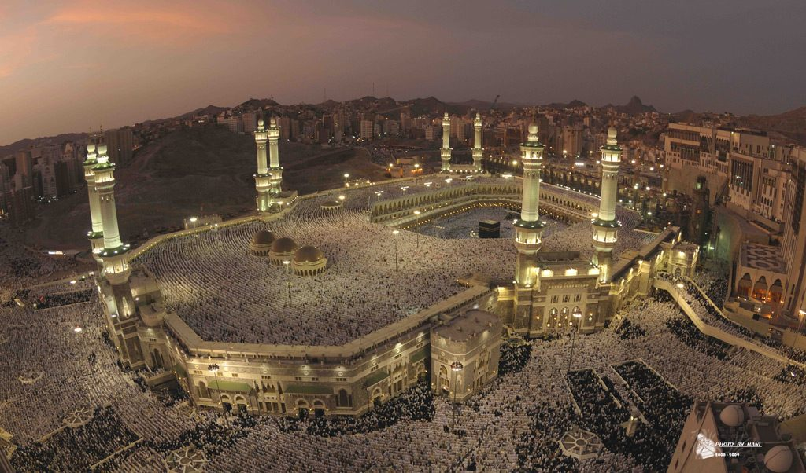

Masjid Rehman

Masjid Rehman, which translates to “house of peace mosque” was established as a place of worship for the
New Tampa Muslims community. The mosque hosts communal prayers for the five daily prayers and the Friday
sermons. It also features a community hall that is utilized for various programs.
The mosque exists to bring the community together. It serves as a learning center for people of all faiths to
foster a better understanding of Islam. Our doors are always open for all to visit and get to know their Muslim
neighbors.
Masjid Rehman is conveniently located on Morris Bridge Road, just north of the intersection at Cross Creek
Boulevard. It is surrounded by a number of large housing communities and nearly adjacent to a shopping plaza
that features a Publix grocery store. While the mosque is primarily a Muslim place of worship, we invite all
those who are interested in learning about Islam firsthand to visit our mosque and get to know the Muslims of
New Tampa.
Mission
Masjid Rehman is an institution dedicated to the betterment of Muslims and the society at large. We draw our
strength and guidance from the Holy Qur`an and the Sunnah of the Prophet Muhammad, may the peace and blessings
of Allah be bestowed upon him. Our goals are to:
- Serve the Muslim community and help Muslims strengthen their faith and moral conduct
- Help the Muslim community continue to effectively contribute to the advancement of society
- Establish strong relations with members of other faiths based on cooperation, tolerance, and mutual
understanding in order to serve our respective communities
- Help all individuals in our community lead a healthy and productive family life that is free from drugs,
crime,
substance abuse and discrimination.
Organization and Goals
The Islamic Society Of New Tampa (ISONET) is the legal entity under which Masjid Rehman operates. It is a nonprofit
community organization dedicated to serving the religious, social and educational needs of the local Muslim American
community in accordance with the Qur’an and Sunnah.
We call forth all Muslims to set the highest standard as concerned citizens devoted to ethical behavior and justice
for all; ideals that can be achieved by uniting and collectively holding on to the rope of Allah (God almighty); the
Qur’an. We recognize that this will entail a constant struggle to become that middle nation, which is constantly
striving to uphold the good whenever it is encountered and forbidding the evil wherever it may reside.
This, our shared responsibility, is formidable so individually we must dedicate ourselves to becoming walking
talking ambassadors of Islam following in the footsteps of our illustrious Prophet Muhammad (peace be upon him).
At the Islamic Society of New Tampa, we will strive to develop and leverage the collective community resources to
launch initiatives that serve the Muslim and the greater non-Muslim community focusing on,
Promoting Islamic values and principles in accordance with the Qur’an and Sunnah
Providing religious and community services to the Muslims of New Tampa
Developing, promoting and distributing educational materials and programs for non-Muslims in the area
Reaching out and collaborating with local organizations for charitable and good will campaigns designed to assist
those in need in the greater Tampa Bay region
Dedicated Islamic initiation and ongoing mentor-ship and support for new Muslims
We welcome everyone to visit us, support us, and continually offer constructive ideas to better realize our united
vision. Let us not forget that we are all members of the same human fraternity; our differences are meant to be
embraced; our diversity should become our strength if we wholeheartedly commit ourselves to get to know each other
because, as Allah has made clear, we are all descendants of one man and one woman.
ISONET Vision of Tomorrow
Our community is growing fast, and the needs of our seniors, adults, families and children are expanding. Until
today, Allah SWT has blessed us to meet this demand within our current capacity; however, we have to think bigger
and more dynamically as we grow.
The vision we present is not for the next 5, 10, or even 20 years. It is a change in mindset.
We would like to share a vision where ISONET becomes a magnet in our region for a multitude of community activities,
providing an attractive and inspiring place for all ages to help preserve the continuation of our Deen for
generations to come!
The fresh look of the design of the ISONET Community Center is inspired by the phrase “New Tampa.” The following
major design objectives were chosen for a long-term sustainable community center: